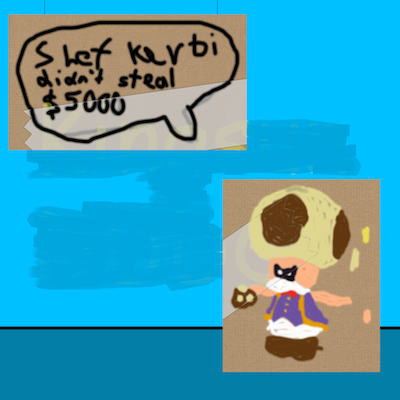
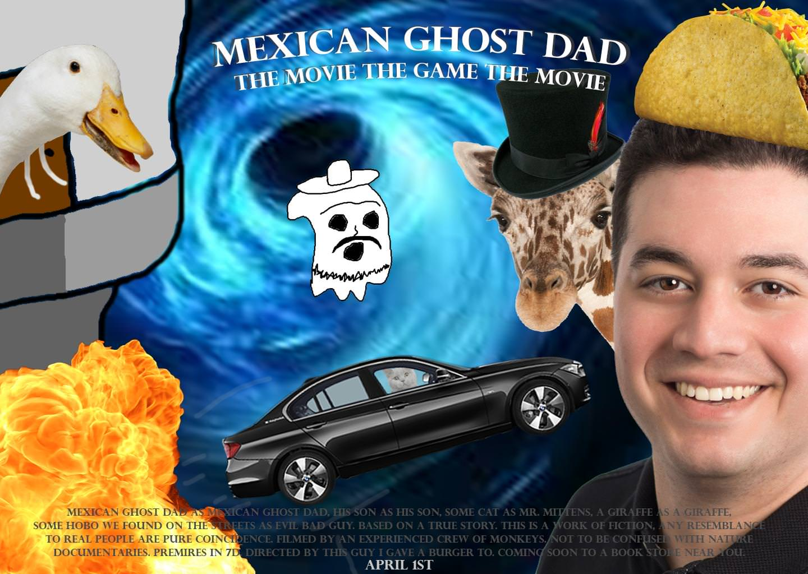

Shef Kerbi News Bulletin #3
PROVIDING ONLY THE BEST NEWS
30 September 2018
BREAKING NEWS:
Earlier this week, Shef Kerbi has been accused of breaking Princess Peach's glass mosaic at the front of her castle, along with $5000.
This is not true and Shef Kerbi denies all of these claims. We have high quality evidence that has been checked by the Dreem Lend police
and they have stated that it's 100% legit


evidence by Keysun DDDO and reali
ADVERTISEMENT:

MORE NEWS:
by Zeke Teddy
This challenger seems to think they can still win the cuteness contest. We have caught a picture of this strange challenger.
Don't mind the fact that it looks 8 bit, it was taken with a really bad camera.
Related to that thing with kerbi and the other guy, turns out the cuteness contest itself ended up being a tie, but then they
got in a fight afterwards and kerbi won, so I guess that settles that.
Apparently healers aren't very good at fighting. Who woulda thunk it.
ADVERTISEMENT

MORE NEWS:
Someone uses a light theme.
POLITICIAL CARTOON:
written by fren barrison, Reali and Keysun DDDO... wait what???
Dum


Fren's Job Is Taken
fren: AAAAAAAAAAAAAAAAAAAAAAAAAAAAAAAAAAAAAAAAAAAAAAAA
caption: this is what happens when u take fren's job
fren: OH NO OH NO OH NO OH NO OH NO OH NO
caption: this is what happens when u steal from fren by making comics
fren: STOP NO PLEASE OH GOD NO STOP
caption: don't do it. dont make comics. fren is the only one that makes comics
fren: I HAVE A KNIFE
caption: he does
Reali vs fren


fren barrison has gone on an unstoppable envy-fueled comics rampage. he blurts out this last comic before descending into an inescapable madness:
straw!reali: i'm a silly comics boi hurr durr! i'm a stinky- Hey you know what? I'm tired of this strawman deal. I'm sick and tired of misrepresenting
Reali. They're actually good at comics, unlike fren. Fren just makes dumb text comics that he has Shef Kerbi draw. *pulls out a katana* I'm going after
fren, and stopping this. *runs off frame to get fren*
fren:aaAAAaaAaaaah!!!! stOP COPYING MY JOB! IM THE COMIC MAN!!! I WRITE THE COMICS!!!! AAAAAAA *runs off frame to counter straw!reali*
WEATHER:
by Zeke Teddy
Today: Still hot. Entirely too hot. Seems like a good day to not go outside.
Min of 26°, max 35°.
Tommorow: Tomorrow it's going to be too hot to go outside don't go outside
Min 29°, max 38°
This news has all been 100% quality approved to federal government standards by Shef Kerbi
this website is best viewed with Ned's Escape